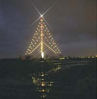

January 11, 2004
Aereda
A few years ago I got the CD from Areada with the mystical title "From a long forgotten future". Some time after that, I bought the book from the same project. It is written by Isengé Bezu and the title is even more mystical "The hunt for the Holy Grail"".
Yesterday I decided to read the book again. I have again read it in almost one breath. The book is about the history around the Dark Ages and even before that. The hunt itself is very intense and interesting. I simply couldn't stop.
If you follow the book, the storyteller solved some historical mysteries and even tells you what the grail is and what the secret behind the grail is.
It is not only the secret behind it all, but also the picture he is giving of the landscape where it all takes place that keeps me thinking about it. One day I will visit this place, Languedoc and it hill that surrounds it.
January 5, 2004
Trivia
I already did like to make crossword puzzles. Recently I learned how to make Xenophon crosswords. These puzzles are even more fun then the normal ones.
Now I have found a funny game on the Internet, Triva. This is the electronic version of Trivial Pursuit on IRC. It is fun to play, even when you are alone, but this almost never happens.
December 12, 2003
Large Christmas tree
It has become a tradition to decorate the Radio/TV Tower in IJsselstein as a large Christmas tree. With 375 meters, it is the world's largest Christmas tree ever.
Many years ago, I drove specially to the little town, to see it with my own eyes. Last year I worked for the first time in the neighborhood and saw it more often.
No I live around the corner and every day I see it when I came or go to or from my work. It is a really beautiful picture to see such large object in a Christmas mood at the dark background of the morning or the evening.
December 1, 2003
Six levels of separation
Researchers published recently there findings in a report with the fabulous title "Anatomy of Modern Friendship". The conclusion of the report is that you now will have about 33 "friends" and you will call 6 of them "real friends". If you are a female, you will see one of them each 3 or 4 days. If you are a male you will see one of them every 5 days.
In average you will have had 396 "friends" at the end of your life.
In theory you will have 'met' half of the world's population if you follow the 'mathematics' of Six levels of separation.
November 24, 2003
Overdue maintenance
Oeps, I don't often visit my own website on the Internet. Now they seem to be not up to date with the local version. I already started to translate and have made some small improvements. It looks like I'm spending no time at all to them if I don't publish these pages. I must admit that my time is limited, but I do have to write something every now and then.
November 11, 2003
Service Manager in production
Finally all political problems have been cleared and the Service Manager is in production. I now received a request from one of the opponents, to create a similar application that can kill processes on the server, just in the same way the Service Manager is managing the services.
October 8, 2003
Service Manager
At the office I faced the difficulty that a 3rd party has to manage a few services on one of our servers. But the internal security policy is prohibiting that they have administrator-level access to this server. Therefore I have written the Service Manager. This small client/server based application is based on exchanging trigger files and the NTFS rights on the directory are limiting the access to this service.
|